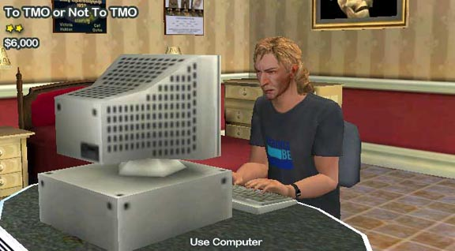

Home
The Movie
Cast & Crew
Soundtrack
How-To Guide
Screenshots
Riley Entertainment
Use the "Previous" and "Next" links below to navigate through the available screenshots.
Previous
(JavaScript must be enabled)
Next
